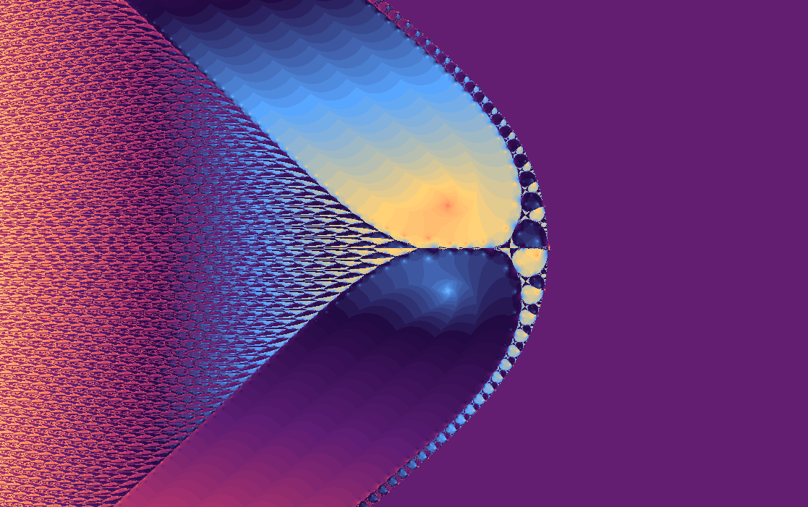

Fractal gallery
Newton \(\log(z)-z=0\)
Root-finding on a function with a branch cut and a temper.
The complex logarithm is multivalued in theory and branch-dependent in computation. This map lets Newton's method wander through that terrain and records where guesses appear to settle.

What to try first
Look for abrupt changes in texture. Logarithms can introduce sharp transitions where the chosen branch changes behavior.
Zoom into a repeated lobe and compare it with its neighbors.
Use Min step in Fractal options to control when two successive Newton estimates count as converged.
Turn on the orbit display to see where each point converges
Mathematical notes
The logarithmic Newton step
The map iterates a Newton-style correction for \(f(z)=\log(z)-z\). The complex logarithm has branch behavior, so the numerical landscape is shaped both by the equation and by the principal logarithm used by the scripting math library used to implement it.